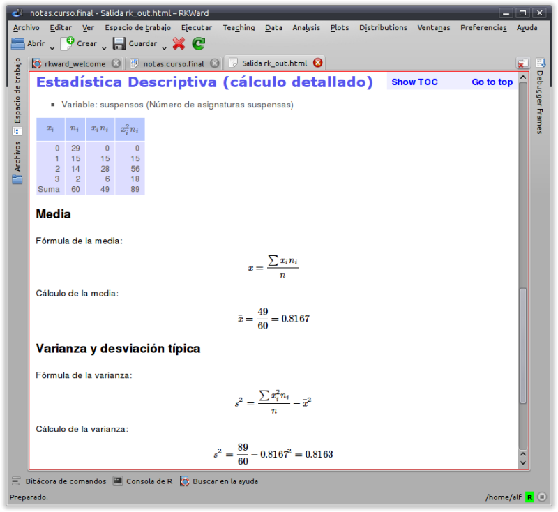

rkTeaching
An R package for teaching and learning Statistics

Table of Contents
What is rkTeaching?
rkTeaching is an R package that provides a plugin for the graphical user interface RKWard adding new menus and dialog specially designed for teaching and learning Statistics.
This package has been developed and is maintained by Alfredo Sánchez Alberca asalber@ceu.es in the Department of Applied Math and Statistics of the San Pablo CEU of Madrid.
If you find out some error or have a suggestion, please, let me know it by email or opening an issue on Github.

Installation
Installation on Windows
For Windows users there is a bundle that include R, RKWard and rkTeaching.
Download last version (R versión 3.6.2, RKWard versión 0.7.1b, rkTeaching versión 1.3.0)
Once the file is downloaded, all you have to do is to execute it.
It will ask for the installation unit and directory.
It is recommended to install it on the root of unit C, that ist C:.
The installation creates a folder rkward into the installation directory. There, in the bin folder you have to execute the rkward.exe file to start the program.
The following video tutorial shows the installation process (in Spanish).
Installation on Mac OS
To install the software on Mac OS systems, you must take the following steps:
-
Install R. R can be downloaded from the following links:
- R version 4.0.1 For MacOS 10.13 and higher.
- R version 3.5.3. For older MacOs versions.
-
Install RKWard. RKWard can be downloaded from the web http://rkward.sourceforge.net.
You have to select the MacOs distribution corresponding to your R version:
-
RKward version 0.7.2 (for R version 4.0.1).
-
RKWard version 0.7.0 (for R version 3.5.3).
After downloading it follow the installation instructions
-
-
Install the packages that rkTeaching depends on. The rkTeaching package depends on several packages that should be installed first. To install this packages you must run RKWard, open the R console and type the following commands:
install.packages(c("R2HTML","car","e1071","Hmisc","plyr","ggplot2","prob","ez","multcomp", "remotes")) -
Install rkTeaching. To install the rkTeaching package you must type the following commands in the R console:
library(remotes) install_github("rkward-community/rk.Teaching")The following video tutorial shows the installation process (only for RKWard version 0.7.0).
Installation on Linux
To install the software in Mac OS systems, you must take the following steps:
-
Install R. R can be downloaded from the web https://cran.r-project.org/. You have to select the Linux distribution and follow the instructions there. It is required an R version 3.4 or higher.
With Debian based distributions like Ubuntu, you can install R from the command line typing the command:
sudo apt-get install rbase -
Install RKWard. RKWard can be downloaded from the web http://rkward.sourceforge.net. You have to select the Linux distribution and follow the instructions there.
With Debian based distributions like Ubuntu, you can install R from the command line typing the command:
sudo apt-get install rkwardIt is important to install versión 0.7 or higher.
-
Install the packages that rkTeaching depends on. The rkTeaching package depends on several packages that should be installed first. To install this packages you must run RKWard, open the R console and type the following commands:
install.packages(c("R2HTML","car","e1071","Hmisc","plyr","ggplot2","prob","ez","multcomp", "remotes")) -
Install rkTeaching. To install the rkTeaching package you must type the following commands in the R console:
library(remotes) install_github("rkward-community/rk.Teaching")The following video tutorial shows the installation process (in Spanish).
Statistical procedures
Once installed a new menu Teaching will appear in RKWard with the following statistical procedures:
- Data manipulation:
- Fiter data
- Calculate variable
- Recoding variable
- Weight data
- Frequency distributions:
- Frequency tabulation
- Bidimensional frequency tabulation
- Plots:
- Bar graph
- Histogram
- Pie graph
- Box graph
- Means graph
- Interaction graph
- Scatterplot
- Descriptive statistics
- Statistics
- Detailed calculation
- Regression:
- Linear Regression
- Non linear regression
- Regression model comparison
- Regression prediction
- Parametric tests:
- Means:
- T test for one sample
- T test for two independent samples
- T test for two paired samples
- ANOVA
- Sample size calculation for mean estimation
- Variances:
- Fisher test for two samples
- Levene test for multiple samples
- Proportions:
- Test for one proportion
- Test for two proportions
- Sample size calculation for proportion estimation
- Means:
- Non parametric tests:
- Normality tests: Shapiro-Wilk, Kolmogorov
- U Mann-Whitney test
- Wilcoxon test
- Friedman test
- Kruskal-Wallis test
- Chi-square test
- Concordance
- Intraclass correlation coefficient
- Cohen’s kappa
- Probability:
- Random games:
- Coins
- Dice
- Cards
- Urn
- Build probability space
- Combine probability spaces
- Repeat probability space
- Calculate probability
- Random games:
- Probability distributions
- Discrete:
- Binomial
- Geometric
- Hypergeometric
- Poisson
- Continous:
- Uniform
- Normal
- Chi-square
- Student’s T
- Fisher’s F
- Discrete:
- Simulations:
- Law of rare events
Functionality
-
Menus and dialogs specially designed to easy the learning, ruling out non-common options to get an simplified and intuitive interface.
-
All the dialogs have a wizard that guide the user step by step through the statistical procedure.

-
HTML output tha presents the results of the analysis in a clear and concise way.

-
Charts based in the modern ggplot2 package.

-
Computation formulas and details available for some statistical procedures. 
rkTeaching is maintained by asalber.
How to cite rkTeaching?
Sánchez-Alberca, A. (2020). rkTeaching (version 1.3) [software]. Get from: http://aprendeconalf.es/projects/rkteaching.
Alfredo Sánchez Alberca
Professor of Mathematics and Statistics
My research interests include Data Science, Statistics, Applied Maths and Machine Learning.